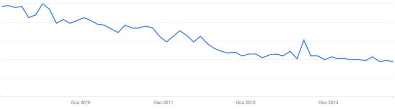
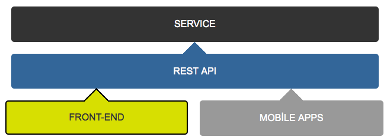
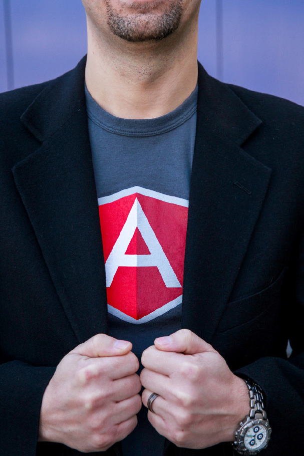

Sahibinden.com
yeni
Front-end mimarisi
Murat Çorlu
sahibinden.com'da Principle Front-end Developer
Front-end geliştiricisinin dramı
Internet Explorer
- "Bu site en iyi ..."
- Kullanım oranı %73,5 (Ekim 2010)
- Güncelletme zorluğu
Back-end merkezli geliştirme ortamları
- Template engine'ler (Smarty, PHPTAL, Thymeleaf ...)
- Hantal IDE'ler (Eclipse, Visual Studio)
- Test etme zorlukları
Yokluklar
- "Yuvarlak buton mu olur arkadaş!"
- "Şu 4 fonttan başkasını kullanamıyoruz: ..."
- "Hocam o işler için Flash lazım, o da bizde yok."
- "Explorer yok de, sana dünyaları vereyim."
Artık devir değişti
Tabi Front-end de değişti
Internet Explorer
- Sahibinden Ekim ayı ortalaması %26.8 (IE 10 hariç, %15.1)
- Mobil cihazların artışı (Ekim ayı %14.27)
Google 'ie fix' arama oranları (Ocak 2009 - Ekim 2013)
"Backend bağımsız" geliştirme ortamları
- REST API
- Node.JS
- Grunt
- "Web Uygulaması" geliştirme çatıları (AngularJS)

Hayaldi, gerçek oldu
- HTML5 desteği %60-70'lere vardı.
- CSS3 desteği %85'lere vardı.
- Otomatik güncellenen tarayıcılar yaygınlaştı.
- Flash gibi eklentilere ihtiyaç azaldı.
Sahibinden.com'da değişim rüzgarı
![]()
Sahibinden'de Mevcut Mimari Yapı

Sahibinden'de Yeni Mimari Yapı
Yeni mimarinin avantajları
- Backend bağımsız önyüz geliştirebilme.
- Hızlı ve pratik geliştirme ortamı.
- Backend'cilerin template tabanlı işyükünden kurtulması
- Template engine'lerin oluşturduğu sunucu yükünden kurtulmak
- Daha düşük veri transferi
- Daha iyi kullanıcı deneyimi (hızlı ve kullanılabilir)
- Backend ve front-end sistemlerini birbirinden bağımsız yayına alabilme
Dezavantaj?
SEO
SEO konusunda çözüm arayışı
Arama motorlarının bir çözüm önerisi var.:
Arama motoru ziyaretlerinde, arayüzü sunucuda bir tarayıcıda çalıştırıp çıkan HTML'i arama motoruna göndermek.
- PhantomJS
- SAS çözümü: Kavuq
Peki malzemeler?
Grunt
Grunt'ın getirdikleri
- Hızlı kurulum
- Otomatik kod kontrolü (JSHint)
- Pre-processor dilleri kullanma (Stylus, Coffeescript), SourceMap üretimi
- Yayınlamaya hazırlama (Merge, Minify, Obfuscate)
- Otomatik dokümantasyon çıkarma (NgDocs)
- Otomatik sprite üretme (grunt-stylus-sprite)
- Templating
Bower
Bower
- Harici kütüphanelerin versiyonlama sisteminden çıkarılması
- Projenizden bağımsız kütüphanelerinizin geliştirme ortamını ayırabilme
- Pratik güncelleme
AngularJS
Neden Angular
- "Olması gerektiği gibi" templateler
- Directive'ler ile HTML'i extend edebilme
- Test edilebilir kod
- Az kod çok iş
- jQuery bağımsız
- Basit ve esnek URL yönetimi
- Büyüdükçe güzelleşen projeler
- Google yapmış
- Eğlenceli
HTML pek bize göre değil
HTML, 1980 yılında CERN araştırmacılarının dokümanlarını paylaşabilmeleri için üretildi.
Oysa biz HTML ile "uygulama" geliştirmeye çalışıyoruz.
Elimizde neler var?
- h1-6
- ul, ol, li
- p, a, strong
- table, div
- article, nav, aside, header, footer
- ...
Bize ne lazım?
- tab
- dialog
- statusbar
- menu
- grid
- ...
Tab örneği
Birinci Tab icerigi
Ikinci Tab icerigi
Bir de Javascript var:
$(function(){
$('.tabs a').on('click', function(e) {
e.preventDefault();
var target = $(this).attr('href');
$('.tab-contents > div').hide();
$(target).show();
});
});
Şöyle olsa?
Birinci Tab icerigi
Ikinci Tab icerigi
* HTML5 Web Components
* AngularJS Directive
Eksikleri tamamlama
Teşekkürler ve hoşçakal jQuery!
- jQuery'i en çok DOM manipülasyonu için kullanıyoruz.
- jQuery'de büyüyen proje ve ekiplerde düzenli kalmak çok zor.
- Angular'da, Directive'ler dışında javascript'te DOM manipulasyonu yapmıyoruz.
- Angular template'i Javascript kodumuzu olabildiğince "görselden" uzak tutuyor.
DEMO ZAMANI
SORUSU OLAN ?
TEŞEKKÜRLER
Sunuma ulaşmak için: github.com/muratcorlu